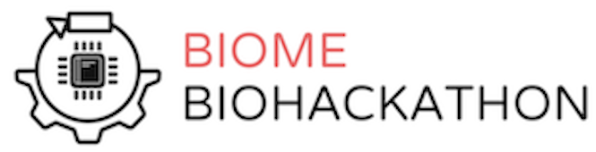

Projects
Excited about starting a project within BIOME? Here are some of the cool things we are doing!
DmJHAMT Purification
Engineering Biofuels
recCas9
Gene Circuits
Robobench
Automating Lab Procedures
Events
Take a look at some of the cool events we run!
iGEM
Engineering Biofuels
BioHacks
Engineering Biofuels
Get Involved
Come join us in the lab!
Brainstorm
Think of an idea
Think of a project and submit a brief project overview to your respective advisor to look over. BIOME leadership will contact you about possible tweaks that need to be made, if any. (example overview)
Pitch
Get started
Meet with BIOME Executive Board to go over possible tweaks as well as begin discussing project specifics. Once you are approved, you can present the project idea at one of our biweekly general meetings to gauge interest and recruit for your project.
Reach Out
Resources & Mentorship
BIOME will suggest faculty mentors to get in touch with about the project. Submit a brief project overview to your respective advisor for the Uytengsu Teaching Lab supervisors to look over. BIOME leadership will contact you about possible tweaks that need to be made, if any.
Lab Access
Safety forms
Fill out the safety form and go through relevant safety training. Each member should fill out a student club project form. Be aware that this requires an advisor signature.
Congrats!
You're in!
Welcome to lab - We're excited to have you join us!
Executive Board
Come meet the people who make BIOME so great!
Eleanor Glockner
Co-President

Alec Lourenço
Co-President
Amara Aarif
Financial Officer
Nicholas Midler
Lab Manager
Natasha Goenawan
Web Developer
iGEM
iGEM

The iGEM (International Genetically Engineered Machines) competition is a global synthetic biology competition where student teams design, build, and test novel genetic devices in a collaborative forum. Teams generally begin research during the school year, and then work throughout the summer and into fall quarter. Projects culminate at the iGEM Jamboree, a conference in November 2018 where teams fly into Boston for a weekend of presenting, networking, and fun!
Application
The 2018 BIOME iGEM Team is no longer recruiting. Check back here next year for a link to next year's application for summer funding.
Classes
Winter Class
This year's iGEM team will be creating a project that attempts to solve a well-defined need. We are identifying and selecting our project through the Stanford Biodesign process, a method that was initially developed for inventing medical devices. To get a head start on idea generation and project selection, BIOME hosted a 1-unit class in winter quarter, BioE 191 with Kara Rogers.
BioHacks
Hackathon
Beginners and experts alike are invited to hack with and for life in this interdisciplinary event open to all majors.Tackle wild challenges with big prizes ($$$) from amazing guests. Past challenges have come from The Tech Museum of Innovation, The Odin, and even The FBI. Meet and create with interesting faculty, companies, and speakers Build diverse projects in:
- Hardware -- (mechanical, ee, …)
- Software -- (cs, bmc, …)
- Wetware -- (biology, bioengineering, …)
- Peopleware -- (education, ethics, policy, …)